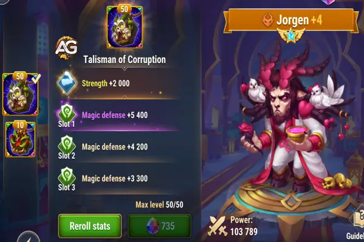
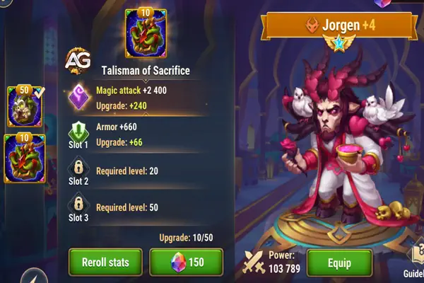
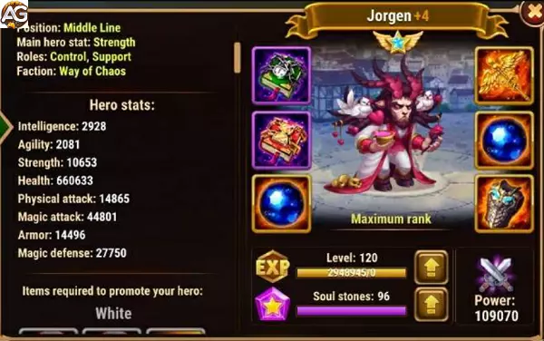

Guia do Jorgen Hero Wars Alliance
- Por: Alexandre Domingos. .
Desbloqueie todo o potencial de Jorgen em Hero Wars Alliance com nosso guia detalhado. Explore os benefícios de seus Talismãs da Corrupção e do Sacrifício para aprimorar suas estratégias em PvP e PvE.

| Atributos Principais | Detalhes |
|---|---|
| Posição: | Linha do Meio |
| Função: | Controle, Suporte |
| Estatísticas principais: | Força |
| Facção: | Caos |
| Como conseguir: | Eventos, baú heroico, Loja da Fronteira |
| Tier List 2025 | Ranque |
|---|---|
| Tier List Geral: | S |
| Tier List de Hidra: | A+ |
Como Subir Jorgen de Nível em Hero Wars Alliance: Estratégias e Dicas
Jorgen é um dos heróis mais versáteis e úteis em Hero Wars Alliance. Sua principal função é controlar o campo de batalha, impedindo os inimigos de usar suas habilidades especiais e fornecendo suporte crucial para sua equipe. Neste guia, vamos explorar como maximizar o potencial de Jorgen e levá-lo ao próximo nível em termos de poder e eficácia.
Conhecendo as Habilidades de Jorgen
Antes de aprofundarmos nas estratégias de nivelamento, é essencial entender as habilidades de Jorgen e como elas podem ser aproveitadas ao máximo:
- Tormento da Impotência (Primeira Habilidade): Jorgen invoca uma caveira que causa dano mágico aos heróis inimigos próximos. Além disso, os inimigos afetados não podem ganhar energia por 9 segundos. Esta habilidade é crucial para interromper as habilidades especiais dos inimigos, dando à sua equipe uma vantagem significativa.
- Ciclo de Energias (Segunda Habilidade): Esta habilidade protege um aliado com um escudo mágico, permitindo que o aliado ganhe energia em dobro até que o escudo seja destruído. Isso é especialmente útil para heróis que dependem de energia para suas habilidades especiais, garantindo que eles possam lançar habilidades com mais frequência.
- Leproso (Terceira Habilidade): Jorgen amaldiçoa todos os inimigos, fazendo com que o mais distante se torne o alvo da maldição. Durante 10 segundos, todo o dano físico recebido pelos inimigos é redirecionado para o alvo da maldição. Essa habilidade é excelente para desviar o dano dos seus heróis mais frágeis e focar em um único inimigo.
- Feridas Contaminadas (Quarta Habilidade): A cada ataque, Jorgen rouba energia do inimigo afetado. Esta habilidade é fundamental para manter os inimigos com pouca energia, limitando sua capacidade de lançar habilidades especiais.
Estratégias para Nivelar Jorgen
Agora que entendemos as habilidades de Jorgen, vamos discutir algumas estratégias para nivelá-lo e maximizar sua eficácia na equipe:
- Priorize as Habilidades de Controle: Ao subir de nível Jorgen, priorize suas habilidades de controle, como "Tormento da Impotência" e "Leproso". Essas habilidades são essenciais para interromper os inimigos e controlar o campo de batalha.
- Invista em Resistência e Poder Mágico: Como Jorgen é um herói de suporte e controle, é crucial investir em atributos que aumentem sua resistência e poder mágico. Isso o tornará mais durável e eficaz em combate prolongado.
- Equipe-o com Heróis que Aproveitam a Redução de Energia: Jorgen funciona melhor quando combinado com heróis que se beneficiam da redução de energia dos inimigos. Heróis como Cleaver, que dependem de habilidades especiais poderosas, podem causar estragos quando os inimigos estão com pouca energia devido às habilidades de Jorgen.
- Use-o em Diversas Composições de Equipe: Jorgen é um herói versátil que se encaixa bem em várias composições de equipe. Experimente diferentes combinações para encontrar a que melhor se adapta ao seu estilo de jogo e à estratégia específica que você deseja implementar.
- Maximize suas Habilidades com Equipamentos e Artefatos Adequados: Certifique-se de equipar Jorgen com itens que aumentem seus atributos de controle e suporte. Artefatos que aumentam a resistência, poder mágico e redução de energia serão especialmente úteis para ele.
Análise dos Talismãs de Jorgen
Talismã da Corrupção:
O Talismã da Corrupção aprimora principalmente a Força de Jorgen, proporcionando a ele um ataque físico adicional e vida. Com este talismã, Jorgen ganha +2.000 de Força, o que se traduz em um aumento no poder de ataque físico, junto com +19.800 de Defesa Mágica distribuídos em três slots. O aumento significativo na Defesa Mágica torna Jorgen particularmente resistente contra equipes de magos, ajudando-o a suportar ataques mágicos.
Atributos do Talismã da Corrupção:
- Slot 0: Força +2.000 (proporciona +80.000 de Vida e +2.000 de Ataque Físico)
- Slot 1: Defesa Mágica +6.600
- Slot 2: Defesa Mágica +6.600
- Slot 3: Defesa Mágica +6.600

No entanto, o aumento no ataque físico proporcionado por este talismã é um pouco redundante, já que o papel principal de Jorgen não é o de um atacante físico. Suas habilidades estão mais alinhadas com o suporte e a perturbação das equipes inimigas do que com a aplicação de dano direto. Portanto, embora o Talismã da Corrupção melhore sua defesa contra magia, o aumento no ataque físico tem menos impacto em sua utilidade geral.
Talismã do Sacrifício:
O Talismã do Sacrifício foca em aprimorar o Ataque Mágico e a Armadura de Jorgen. Com este talismã, Jorgen ganha +12.000 de Ataque Mágico e +19.800 de Armadura tornando-o mais formidável contra ameaças físicas. O aumento no Ataque Mágico beneficia diretamente duas habilidades de Jorgen:
Atributos do Talismã do Sacrifício:
- Slot 0: Ataque Mágico +12.000
- Slot 1: Armadura +6.600
- Slot 2: Armadura +6.600
- Slot 3: Armadura +6.600

- Tormento do Poder: Esta habilidade causa dano com base no Ataque Mágico de Jorgen, então aumentar o Ataque Mágico melhora significativamente a eficácia desta habilidade.
- Maldição do Leproso: Esta habilidade cria um escudo que absorve dano, e sua força escala com o Ataque Mágico de Jorgen. O aumento proporcionado pelo Talismã do Sacrifício melhora bastante a capacidade deste escudo, permitindo que Jorgen proteja melhor seus aliados.
Considerando que a eficácia de Jorgen em batalha está intimamente ligada à sua capacidade de perturbar e enfraquecer a equipe inimiga, o foco do Talismã do Sacrifício no Ataque Mágico é altamente benéfico. Ele aprimora suas capacidades ofensivas, tornando-o uma força mais formidável no campo de batalha, especialmente ao enfrentar equipes com alto dano mágico ou físico.
Resumo dos Talismãs de Jorgen
Talisman of Corruption (Talismã da Corrupção): Ideal para jogadores que desejam fortalecer as defesas de Jorgen contra equipes mágicas. O aumento da Defesa Mágica torna-o mais difícil de ser derrotado por magos, mas o aumento no Ataque Físico é menos útil, considerando o papel de Jorgen.
Talisman of Sacrifice (Talismã do Sacrifício): Superior para jogadores que querem melhorar as capacidades ofensivas de Jorgen e a força do seu escudo. Este talismã aumenta significativamente seu Ataque Mágico, tornando-o mais eficaz tanto em papéis ofensivos quanto defensivos, especialmente quando enfrenta equipes de dano misto.
Lembre-se de que apenas um talismã pode ser equipado por vez, então é importante fazer uma escolha sábia. Em resumo, embora ambos os talismãs tenham suas forças, o Talismã do Sacrifício geralmente oferece mais versatilidade e poder, particularmente em batalhas onde as habilidades de Jorgen precisam brilhar. É a melhor escolha para maximizar o potencial de Jorgen em Hero Wars Alliance.
Pontos Positivos e Negativos
Pontos Positivos
- Ultimate desativa o ganho de energia dos inimigos por 9s
- Protege um aliado com escudo para todo tipo de dano com ganho de energia em dobro
- Redireciona o dano físico para o inimigo da linha de fundo
- Rouba energia dos inimigos quando ataca
Pontos Negativos
- Jorgen é alvo principal de inimigos que marcam o roubo de energia
- Causa pouco dano
Prioridade de Evolução de Estatísticas de Jorgen
Prioridade de Glifos
| # | Prioridade |
|---|---|
| 1 | Vida |
| 2 | Armadura |
| 3 | Defesa Mágica |
| 4 | Força |
| 5 | Ataque Mágico |
Concentre-se em melhorar os glifos de Vida, Armadura e Defesa Mágica primeiro para aumentar a sobrevivência. Reforçar os glifos de Força e Ataque Mágico pode ser considerado posteriormente para capacidades ofensivas.
Prioridade de Artefatos
| # | Prioridade |
|---|---|
| 1 | Livro |
| 2 | Anel |
| 3 | Arma (Ataque Mágico) |
Comece melhorando o artefato Livro seguido pelo Anel. A Arma, especificamente focando no Ataque Mágico, pode ser aprimorada posteriormente para aumentar as capacidades ofensivas.
Prioridade de Visuais
| # | Prioridade |
|---|---|
| 1 | Vida |
| 2 | Dureza |
| 3 | Força |
| 4 | Defesa Mágica |
| 5 | Ataque Mágico |
| 6 | Ataque Mágico |
Priorize a melhoria dos visuais de Vida, Dureza, Força e Defesa Mágica inicialmente para melhorar a sobrevivência e a mitigação de danos. Os visuais de Ataque Mágico podem ser aprimorados posteriormente para aumentar as capacidades ofensivas.

Jorgen vs Hidras
Jorgen é um bom herói contra as hidras e forma um combo razoável de dano com outros aliados da facção do Caos.
- Equipe de Jorgen para Hidra do Fogo: Martha, Llith, Xe'sha, Jorgen, Celeste:(Dano: 28.11M)
Jorgen em Batalhas
Forte Contra
- Keira, Dorian, Xe'sha, Karkh, Ishmael, Hélio, Cornelius, Fobos, Artemis, Galahad, Corvus Altar, Machadinha
Jorgen Melhores Counters
| Counters | O que acontece |
|---|---|
| A habilidade Lepra de Jorgen amaldiçoa o time inimigo e redireciona todo o dano físico recebido pelo time inimigo ao alvo mais distante. Porém, a habilidade Balada da Tenacidade de Sebastian conjura um escudo que protege contra a maldição de Jorgen e dessa forma quebra a maldição. | |
| A quarta habilidade, passiva de Jorgen, rouba um pouco de energia do inimigo que recebe dano e cada ataque. Dessa forma, Satori aplica as marcas em Jorgen podendo causar um dano mortal. | |
| A segunda habilidade de Nebula, Calma, além de curar, limpa efeitos negativos dos dois aliados próximos que estiverem recebem o buff da habilidade equilíbrio. Sendo assim, quando Jorgen usa a Habilidade 1, Tormento da Impotência, que impede os inimigos de ganhar energia. Nebula ira limpar esse efeito negativo dos dois aliados próximos. | |
| Quando Jorgen redireciona todo o dano físico da equipe inimigo para o alvo mais distante e esse alvo for Martha ela ira resistir, pois Martha é um tanque de linha de fundo, além disso, irá ganhar energia e ativar sua Ultimate mais vezes acelerando todos os aliados. |


Melhores Times de Jorgen em Hero Wars
| # | Heróis |
|---|---|
| 1 | Astrid e Lucas, Isaac, Jorgen, Juiz, Julius |
| 2 | Aidan, Dorian, Xe'sha, Jorgen, Cleaver |
| 3 | Fobos, Cornelius, Iris, Jorgen, Rufus |
| 4 | Fobos, Cornelius, Jorgen, Morrigan, Corvus |
| 5 | Lilith, Dorian, Xe'sha, Jorgen, Astaroth |
| 6 | Fafnir, Jorgen, Keira, Morrigan, Corvus |
| 7 | Sem Rosto, Jorgen, Celeste, Satori, Astaroth |
| 8 | Amira, Jorge, Celeste, Satori, Astaroth |
| 9 | Martha, Sem Rosto, Jorgen, K'arkh, Astaroth |
| 10 | Sem Rosto, Jorgen, Nebula, K'arkh, Astaroth |
| 11 | Fobos, Sem Rosto, Jorgen, Morrigan, Corvus |
| 12 | Martha, Lars, Jorgen, Krista, Astaroth |
| 13 | Dorian, Lars, Jorgen, Krista, Astaroth |
| 14 | Hélio, Dorian, Orion, Jorgen, Astaroth |
Conclusão do Guia do Jorgen
Jorgen é um herói incrivelmente valioso em Hero Wars Alliance, graças às suas habilidades de controle e suporte. Ao seguir as estratégias mencionadas neste Tutorial e entender suas habilidades, você poderá maximizar o potencial de Jorgen e elevá-lo a novos patamares de eficácia em sua equipe. Experimente diferentes combinações e estratégias para encontrar a que melhor se adapta ao seu estilo de jogo e às necessidades da sua equipe. Com dedicação e planejamento cuidadoso, Jorgen se tornará uma peça indispensável em suas batalhas épicas em Hero Wars Alliance.
Sugestões de Vídeo:
Guida do Jorgen
Você pode ter interesse:
 Aidan
Aidan Astaroth
Astaroth Dorian
DorianDeixe Sua Opinião!
Você gostou do nosso Guia do Jorgen? Há algo que não entendeu ou gostaria de sugerir mudanças? Convidamos você a se juntar à nossa sessão de comentários na página do Alexandre Games Blog. Não hesite em expressar sua opinião, clarificar suas dúvidas e compartilhar sua sugestões.
Clique no botão abaixo para começar: